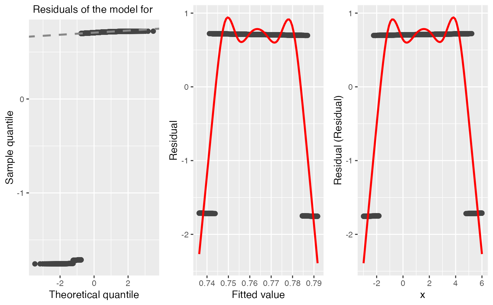
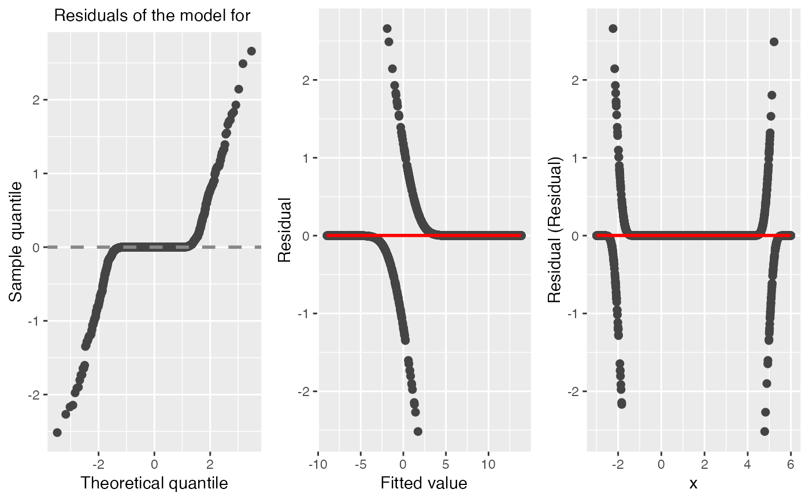

A generic function to simulate surrogate residuals for cumulative link regression models using the latent method described in Liu and Zhang (2017).
It also support the sign-based residuals (Li and Shepherd, 2010), generalized residuals (Franses and Paap, 2001), and deviance residuals for cumulative link regression models.
# S3 method for clm residuals( object, type = c("surrogate", "sign", "general", "deviance"), jitter = c("latent", "uniform"), jitter.uniform.scale = c("probability", "response"), nsim = 1L, ... ) # S3 method for lrm residuals( object, type = c("surrogate", "sign", "general", "deviance"), jitter = c("latent", "uniform"), jitter.uniform.scale = c("probability", "response"), nsim = 1L, ... ) # S3 method for orm residuals( object, type = c("surrogate", "sign", "general", "deviance"), jitter = c("latent", "uniform"), jitter.uniform.scale = c("probability", "response"), nsim = 1L, ... ) # S3 method for polr residuals( object, type = c("surrogate", "sign", "general", "deviance"), jitter = c("latent", "uniform"), jitter.uniform.scale = c("probability", "response"), nsim = 1L, ... ) # S4 method for vglm residuals(object, ...) # S3 method for ord residuals( object, type = c("surrogate", "sign", "general", "deviance", "pearson", "working", "response", "partial"), jitter = c("latent", "uniform"), jitter.uniform.scale = c("probability", "response"), nsim = 1L, ... ) # S3 method for PAsso residuals(object, draw_id = 1, ...)
Arguments
| object | An object of class |
|---|---|
| type | The type of residuals which should be returned. The alternatives are: "surrogate" (default), "sign", "general", and "deviance". Can be abbreviated. surrogatesurrogate residuals (Liu and Zhang, 2017); signsign-based residuals; generalgeneralized residuals (Franses and Paap, 2001); deviancedeviance residuals (-2*loglik). |
| jitter | When the latentlatent approach; uniformjittering uniform approach. |
| jitter.uniform.scale | When the |
| nsim | An integer specifying the number of replicates to use.
Default is |
| ... | Additional optional arguments. |
| draw_id | A number refers to the i-th draw of residuals. |
Value
A numeric vector of class c("numeric", "resids") containing
the simulated surrogate residuals. Additionally, if nsim > 1,
then the result will contain the attributes:
drawsA matrix with nsim columns, one for each
is a replicate of the surrogate residuals. Note, they correspond
to the original ordering of the data;
draws_idA matrix with nsim columns. Each column
contains the observation number each surrogate residuals corresponds to in
draws. (This is used for plotting purposes.)
A matrix of class c("matrix", "resids") containing
the simulated surrogate residuals used for the partial association
analysis in PAsso. Additionally, if rep_num > 1 in PAsso,
then the result will contain the attributes:
drawsAn array contains all draws of residuals.
Note
Surrogate response values require sampling from a continuous distribution;
consequently, the result will be different with every call to
surrogate. The internal functions used for sampling from truncated
distributions are based on modified versions of
rtrunc and qtrunc.
For "glm" objects, only the binomial() family is supported.
References
Liu, Dungang and Zhang, Heping. Residuals and Diagnostics for Ordinal Regression Models: A Surrogate Approach. Journal of the American Statistical Association. http://www.tandfonline.com/doi/abs/10.1080/01621459.2017.1292915?journalCode=uasa20
Li, C., & Shepherd, B. E. (2010). Test of association between two ordinal variables while adjusting for covariates. Journal of the American Statistical Association, 105(490), 612-620. https://doi.org/10.1198/jasa.2010.tm09386
Franses, Philip Hans, and Richard Paap. Quantitative models in marketing research. Cambridge University Press, 2001. https://pdfs.semanticscholar.org/dad0/820f287a8cf5a4e8039549e35fc111fd86e5.pdf
Examples
# Generate data from a quadratic probit model set.seed(101) n <- 2000 x <- runif(n, min = -3, max = 6) z <- 10 + 3 * x - 1 * x^2 + rnorm(n) y <- ifelse(z <= 0, yes = 0, no = 1) # Scatterplot matrix pairs(~ x + y + z)# Misspecified mean structure fm1 <- glm(y ~ x, family = binomial(link = "probit")) diagnostic.plot(fm1)#># Correctly specified mean structure fm2 <- glm(y ~ x + I(x ^ 2), family = binomial(link = "probit"))#> Warning: glm.fit: fitted probabilities numerically 0 or 1 occurreddiagnostic.plot(fm2)#>